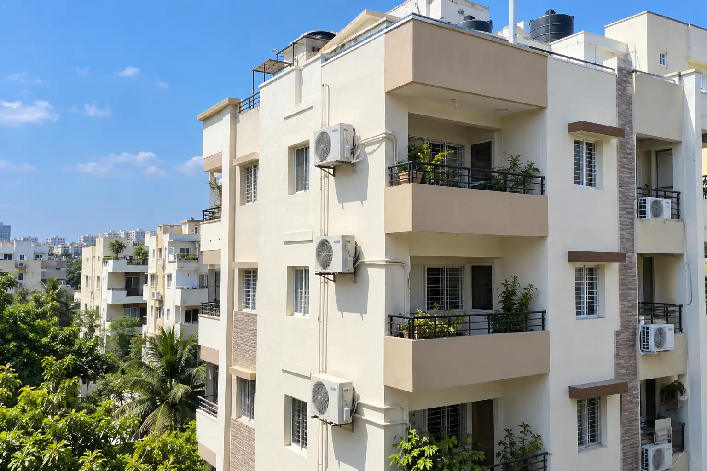

TS
AC service in Warangal
Cooling Expert states Telangana-wide coverage for AC repair, installation and servicing, with the visit scope discussed before work.
Ask about Warangal →Cooling Expert is based in Hyderabad and states service coverage across Telangana. Named coverage includes Warangal, Karimnagar, Nizamabad, Khammam, Nalgonda, Mahbubnagar, Ramagundam, Siddipet and Adilabad.
Cooling Expert states Telangana-wide coverage for AC repair, installation and servicing, with the visit scope discussed before work.
Ask about Warangal →Cooling Expert states Telangana-wide coverage for AC repair, installation and servicing, with the visit scope discussed before work.
Ask about Karimnagar →Cooling Expert states Telangana-wide coverage for AC repair, installation and servicing, with the visit scope discussed before work.
Ask about Nizamabad →Cooling Expert states Telangana-wide coverage for AC repair, installation and servicing, with the visit scope discussed before work.
Ask about Khammam →Cooling Expert states Telangana-wide coverage for AC repair, installation and servicing, with the visit scope discussed before work.
Ask about Nalgonda →Cooling Expert states Telangana-wide coverage for AC repair, installation and servicing, with the visit scope discussed before work.
Ask about Mahbubnagar →Cooling Expert states Telangana-wide coverage for AC repair, installation and servicing, with the visit scope discussed before work.
Ask about Ramagundam →Cooling Expert states Telangana-wide coverage for AC repair, installation and servicing, with the visit scope discussed before work.
Ask about Siddipet →Cooling Expert states Telangana-wide coverage for AC repair, installation and servicing, with the visit scope discussed before work.
Ask about Adilabad →
Representative image · generated original.